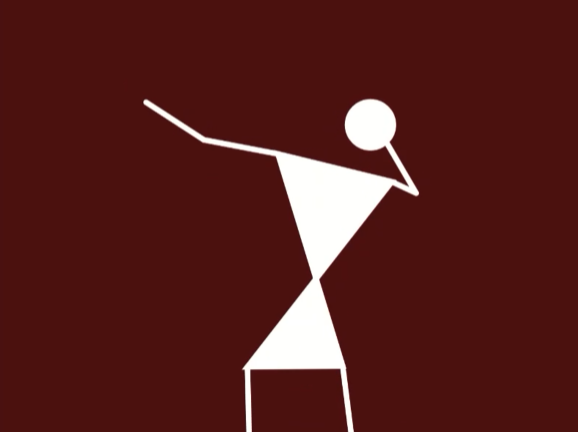
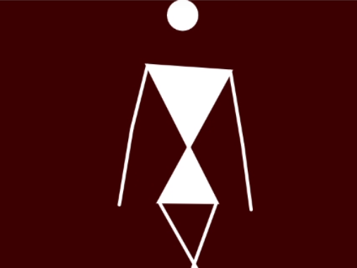
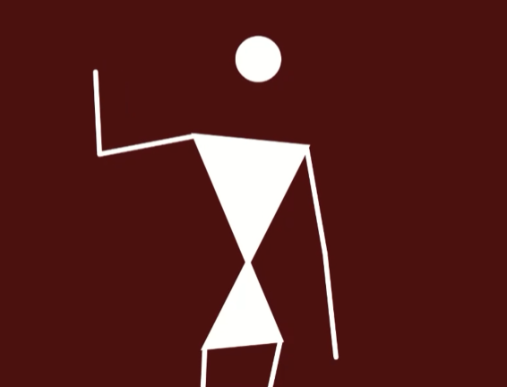

This project was honestly made as a fun way to spread awareness about the tribal arts of India because they’re quite underrated for their simplicity.
Originally it was supposed to be a project where users came and interacted with this in a physical space, but unfortunately that couldnt happen due to the current pandemic.
Inspired by Mr. Nitin Dhonde and Mrs Ambika, our guest faculties for Animation and New Media Studies respectively, I thought of a more modern approach to tribal art. With Warli being easiest to code, I took it as a good start to my efforts in making this project come to life
All that was really needed to mainly set it up was the PoseNet library, used in p5js, and basic HTML/CSS code.
And of course, a laptop and a webcam
Using the tools above I was able to code limb point to point mapping that is live tracking by :
And using the basic shapes used in warli (circle, triangles, lines), the whole code in essence turns you into a piece of warli yourself!
When it was decided I'm doing this as my actual design project, I got to thinking.
"What's the point of this? What's the reason I want to pursue this so badly?"And while thinking, I sent it to my friends



Within minutes I was getting videos of them dancing and telling me "this is the most fun I've had in the pandemic"
Followed by "what is it?"
And for me, that settled it. Creating awareness of a popular but underrated artform in a fun way, to be used as a base project with as many uses as one can think of